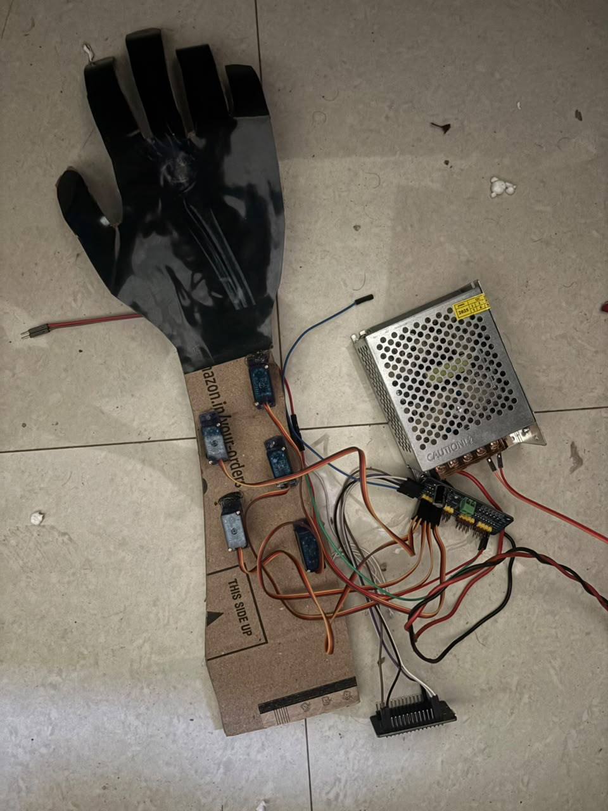

| Submitted by | Rudra Pratap Singh, Harshit Yadav, Ankit Kumar Yadav, Suchir Ram Mishra |
| Roll Numbers | 58, 32, 15, 68 |
| Branch / Semester | Electrical Engineering / First Semester |
| College | Bundelkhand Institute of Engineering and Technology, Jhansi |
| Submitted to | Er. Shailendra Gautam |

This is to certify that the project work entitled “Robotic Palm — Wi-Fi Controlled Five-Finger Tendon-Driven Robotic Hand” has been carried out and submitted by Rudra Pratap Singh (Roll No. 58), Harshit Yadav (Roll No. 32), Ankit Kumar Yadav (Roll No. 15) and Suchir Ram Mishra (Roll No. 68), students of First Semester, Electrical Engineering, Bundelkhand Institute of Engineering and Technology, Jhansi, in partial fulfilment of the requirements of the First-Year Engineering project curriculum.
The work presented in this report is an authentic record of the students’ own effort. The hardware prototype was assembled, wired, programmed and tested by the group, and the calibration figures and test results reported in Sections 13 and 14 were measured on the working prototype under supervision.
To the best of my knowledge, this work has not been submitted elsewhere for the award of any other degree or diploma.
We express our sincere gratitude to our project supervisor Er. Shailendra Gautam for his continuous guidance, patience and encouragement throughout this project. His suggestions on servo safety, current limiting and systematic testing shaped the way we approached the build.
We thank the Department of Electrical Engineering, BIET Jhansi, for providing the laboratory facilities, instruments and components required for assembly and testing. We are also grateful to our seniors and classmates for their help during the mechanical assembly and the tendon-routing stage, which proved to be the most demanding part of the work.
Finally, we thank our families for their constant support and motivation.
| 1. | Abstract | 5 |
| 2. | Introduction | 5 |
| 3. | Problem Statement | 5 |
| 4. | Objectives | 5 |
| 5. | Background and Related Work | 6 |
| 6. | Working Principle | 6 |
| 7. | System Block Description | 7 |
| 8. | Components Required | 7 |
| 9. | Circuit Connections and Wiring | 8 |
| 10. | Construction Procedure | 10 |
| 11. | Software Design | 10 |
| 12. | Firmware Highlights | 11 |
| 13. | Calibration Data | 12 |
| 14. | Testing and Observation | 13 |
| 15. | Advantages | 15 |
| 16. | Limitations | 16 |
| 17. | Safety Precautions | 16 |
| 18. | Applications | 16 |
| 19. | Future Improvements | 17 |
| 20. | Conclusion | 17 |
| 21. | Viva-Voce Questions | 17 |
| 22. | References | 18 |
The Robotic Palm is a five-finger anthropomorphic robotic hand that reproduces human finger motion using a tendon-driven mechanism and can be operated from any ordinary web browser over Wi-Fi. Each finger is pulled closed by a nylon tendon wound on the horn of an SG90 micro servo and returns to the open position through the elastic restoring force of the moulded palm. The five servos are driven by a PCA9685 16-channel PWM generator, which communicates with an ESP32 microcontroller over the I²C bus and produces hardware-timed 50 Hz pulses without loading the processor.
The ESP32 hosts a self-contained web server, so the control interface is delivered by the board itself — no mobile application, no cloud service and no computer are required once power is applied. The page provides twelve static hand signs, five animated gesture sequences, individual per-finger control in degrees, and a complete calibration workflow whose results are stored in the ESP32’s non-volatile flash memory.
Two design features distinguish this build from a simple multi-servo demonstration. First, a synchronised motion engine scales each servo’s step size in proportion to the distance it must travel, so fingers with very different ranges begin and finish their motion together and the hand closes as one unit. Second, an automatic relax function removes the PWM signal eight seconds after motion stops, which eliminates the continuous stall current that would otherwise overheat the servos and wear their plastic gear trains. The completed prototype was verified at the PWM register level, checked for repeatability over repeated cycles, and tested across all seventeen implemented motions.
The human hand is remarkable for performing a very wide range of tasks with a comparatively small number of actuators. Reproducing even a part of this capability is a classic problem in robotics, and robotic hands are today used in prosthetics, industrial pick-and-place systems, telemanipulation in hazardous environments, and humanoid research platforms. Commercial prosthetic hands, however, remain extremely expensive, which keeps them out of reach for most users in India.
This project demonstrates that the fundamental principle of such a hand — tendon actuation driven by position-controlled servos — can be built and understood at first-year engineering level using low-cost, widely available components. The mechanical structure uses a moulded five-finger palm on a rigid forearm base; the actuation uses five SG90 micro servos; and the electronics use one ESP32 development board and one PCA9685 driver module.
Alongside the mechanism itself, the project addresses a practical engineering concern that is easy to overlook: a servo commanded to a position it cannot physically reach will draw stall current indefinitely and destroy itself. Much of the firmware described in this report exists to prevent exactly that, through per-finger travel limits, measured calibration and automatic PWM cut-off.
Building a multi-finger robotic hand at student level presents four difficulties that a single-servo project does not. A microcontroller must generate five independent, accurately timed PWM signals at the same time while remaining free to serve a web page. The servos draw far more current than the controller board can supply, so the power paths must be separated while still sharing a common ground reference. Every finger has a different tendon length and a different mechanical travel, so a single fixed “closed” position cannot serve all five. Finally, an incorrectly specified position silently destroys a servo through stall heating.
The objective of this project is therefore to design and build a five-finger robotic palm that moves each finger independently and in a coordinated manner, that is safe to operate for extended periods, that can be calibrated and recalibrated without recompiling the firmware, and that can be operated by any person from a browser without installing software.
Tendon-driven actuation. In a tendon-driven hand the actuator is not placed inside the finger. A flexible line, equivalent to a tendon in the human hand, runs along the underside of the finger from the fingertip to a motor mounted in the forearm. Pulling the line flexes the finger; releasing it allows the finger to straighten. This keeps the heavy components away from the moving structure — exactly the arrangement found in the human forearm, and the reason it was adopted here.
Return mechanism. Every tendon-driven finger needs a restoring force to reopen. Three approaches are common: an antagonistic second tendon, an embedded return spring, and the elastic recovery of the finger material itself. This prototype uses the third, which halves the actuator count and simplifies construction, at the cost of a slower and less forceful opening stroke.
Position control of hobby servos. An SG90 servo contains a DC motor, a reduction gear train, a feedback potentiometer and a control circuit. The commanded position is encoded as the width of a pulse repeated every 20 ms: approximately 500 µs corresponds to 0° and 2400 µs to 180°. Significantly, the servo has no way to report whether it reached the target — if the tendon prevents motion, the motor simply continues to draw stall current. This open-loop property is the single most important safety consideration in the design.
The operation of the Robotic Palm can be followed as a chain from the user’s instruction to the movement of a finger.
The user opens the control page served by the ESP32 and selects a sign, a gesture, or a position for an individual finger. The browser sends a short HTTP request such as /api/sign?n=peace or /api/set?ch=1°=140. The same commands are also available through the USB serial console, which is used during assembly and fault-finding.
Hand signs are not stored as pulse widths. Each sign is stored as five percentages, where 0 % means fully open and 100 % means fully closed. The firmware converts a percentage into a pulse width using that particular finger’s own calibrated endpoints:
pulse = openus + (closedus − openus) × percent ÷ 100
Because the conversion uses each finger’s measured endpoints, one definition of “fist” produces the correct travel for all five fingers even though the thumb closes at 110° and the middle finger needs 175°. Recalibrating a finger automatically corrects every sign and gesture that uses it, with no change to the firmware.
Every computed value passes through a clamping function before use. The value is limited to the intersection of the absolute servo range (500–2400 µs) and the individual finger’s recorded limits. A command that would drive a servo past its mechanical stop is reduced to the safe boundary rather than being executed.
Fingers are never stepped to their target instantly. A timer runs every 20 ms and moves each finger a small amount towards its goal. The step is not equal for all fingers; it is scaled by the ratio of that finger’s remaining distance to the largest remaining distance in the group. A finger that must travel twice as far moves twice as fast, so all five complete their motion at the same instant and the hand closes as a single coordinated unit.
The ESP32 does not generate the servo pulses itself. It writes the required ON and OFF counts to the PCA9685 over I²C, and the PCA9685 reproduces those pulses continuously in hardware. The processor is therefore left free to serve web requests without any effect on servo timing — a key advantage over software PWM.
The servo horn rotates, winding the tendon around it. The tendon pulls the fingertip towards the palm and the finger flexes. When the servo returns towards its open position the tendon slackens and the elasticity of the palm material straightens the finger again.
If no new command arrives within eight seconds, the firmware writes zero-width pulses to all channels. The servos lose holding torque and the hand goes limp. This removes the continuous current that a loaded servo would otherwise draw while holding a position, and is the main reason the prototype can be left powered during a demonstration without the motors becoming hot. Any new command restores the signal immediately.
The system is organised in five functional stages. Control information flows from left to right; electrical power enters separately from below and is deliberately kept apart from the controller supply.
Figure 2: System block diagram of the Robotic Palm.
Any Wi-Fi capable device with a browser. The ESP32 serves a single self-contained HTML page, so nothing needs to be installed and the hand can be demonstrated using the examiner’s own phone.
The ESP32 DevKit V1 is the decision-making element. It runs the HTTP server, converts signs into pulse widths, executes the synchronised motion engine on a 20 ms timer, manages automatic relaxation, and stores calibration in its internal non-volatile storage so that settings survive a power cycle.
The PCA9685 contains an independent 12-bit PWM generator for each of its sixteen channels and a programmable prescaler that sets the common frequency. Once configured it regenerates the pulses in hardware indefinitely, which decouples servo timing from processor load.
Five SG90 micro servos, one per finger, mounted on the rigid forearm base. Each has an operating torque of approximately 1.8 kg·cm and draws roughly 100–150 mA while moving and up to about 700 mA if stalled.
Nylon tendon lines run from each servo horn through guide channels to the corresponding fingertip. The moulded palm provides both the finger structure and the elastic return force.
Table 1 lists every component used in the Robotic Palm prototype together with its function in the system.
| S. No. | Component | Function / Role in the System | Qty |
|---|---|---|---|
| 1 | ESP32 DevKit V1 Development Board | Main controller; runs the Wi-Fi web server, motion engine and calibration storage | 1 |
| 2 | PCA9685 16-Channel PWM Servo Driver | Generates five hardware-timed 50 Hz servo signals; communicates over I²C at address 0x40 | 1 |
| 3 | SG90 Micro Servo Motor (9 g) | One per finger; converts the commanded pulse width into angular position to pull the tendon | 5 |
| 4 | SMPS Power Supply, 5 V 5 A | Supplies the common servo power rail; rated well above the combined servo demand | 1 |
| 5 | Moulded Five-Finger Palm | Provides the finger structure, tendon routing channels and the elastic return force | 1 |
| 6 | Rigid Forearm Base Plate | Mounting platform for the five servos, the driver board and the controller | 1 |
| 7 | Nylon Tendon Line | Transmits the pull from each servo horn to the corresponding fingertip | 5 lines |
| 8 | Servo Horns and Mounting Screws | Couple the tendon to the servo output spline and set the tendon winding radius | 5 sets |
| 9 | Male-to-Female Jumper Wires | Carry the four I²C and power connections between the ESP32 and the PCA9685 | 4 |
| 10 | USB Cable (Micro-B, data capable) | Supplies the ESP32 and carries firmware upload and the serial diagnostic console | 1 |
| 11 | Connecting Wire for Power Rail | Carries 5 V and 0 V from the SMPS to the PCA9685 servo power pins | As required |
| 12 | Adhesive and Cable Ties | Secure the servos to the base and restrain the wiring loom | As required |
Table 1: Components required for the Robotic Palm.
Only four wires connect the ESP32 to the PCA9685. The common ground is not optional: without it the I²C signals have no reference and the driver will not be detected on the bus.
| ESP32 Pin | PCA9685 Pin | Purpose | |
|---|---|---|---|
| 3V3 | → | VCC | Logic supply for the driver IC (3.3 V) |
| GND | → | GND | Common ground reference — mandatory |
| GPIO22 | → | SDA | I²C serial data line |
| GPIO23 | → | SCL | I²C serial clock line |
Table 2: ESP32 to PCA9685 connections. Device address 0x40 (no address jumpers bridged).
The V+ pin is a single rail shared by all sixteen channels. Applying 5 V at any one channel’s power pin energises the red pin of every channel, so the supply is connected at the unused channel 15 and reaches all five servos internally.
| From SMPS | To PCA9685 | |
|---|---|---|
| +5 V output | → | Channel 15 red pin (centre row, V+ rail) |
| 0 V / −V output | → | Channel 15 black pin (bottom row, GND rail) |
Each servo connector presents three conductors: brown to ground, red to V+, and orange to the channel’s signal pin. The connector seats in one orientation only, with the brown conductor towards the edge of the board.
Figure 3: Channel allocation. The V+ rail is common to all sixteen channels.
| Channel | Finger | Note |
|---|---|---|
| CH0 | THUMB | Shortest travel; opposes the other four |
| CH1 | INDEX | Used alone for the pointing sign |
| CH2 | MIDDLE | Longest finger, largest tendon travel |
| CH3 | RING | Largest tendon travel together with the middle finger |
| CH4 | PINKY | Shortest finger; smallest available tendon stroke |
| CH15 | — (no servo) | Power injection point for the SMPS |
Table 3: Servo channel allocation.
| Parameter | Value |
|---|---|
| I²C bus speed | 100 kHz (standard mode) |
| PCA9685 device address | 0x40 |
| PWM frequency | 50 Hz (20 ms period) |
| PCA9685 prescaler value | 131 → measured 49.9 Hz |
| PWM resolution | 12 bit (4096 counts), 1 count ≈ 4.89 µs |
| Servo pulse range | 500 µs (0°) to 2400 µs (180°) |
| Motion update interval | 20 ms (one PWM period) |
| Servo supply voltage | 5 V DC from SMPS |
| Controller supply voltage | 5 V USB, regulated on-board to 3.3 V |
| Automatic relax delay | 8 s (adjustable, 0 disables) |
The firmware presents all positions in degrees, which is far easier to reason about than microseconds. The conversion used throughout is linear:
pulse (µs) = 500 + angle (°) × 1900 ÷ 180
For example 15° gives 658 µs, 110° gives 1661 µs and 175° gives 2347 µs. These exact values appear in the calibration table of Section 13 and in the measured register readings of Section 14.
The order of assembly matters: the servo horns must be fitted while the servos are held at a known electrical position, otherwise the available travel is lost and no amount of software adjustment can recover it.
The firmware is written in C++ using the Arduino framework for ESP32 and is built with PlatformIO. It is organised as a single non-blocking main loop: no part of the program waits in a delay, so the web server, the serial console and the motion engine all remain responsive at the same time.
| Module | Responsibility |
|---|---|
| Configuration | Pin assignments, I²C address, absolute pulse limits and the degree-mapping constants |
| Finger table | The single place where finger names, channel numbers, calibrated endpoints and per-finger limits are defined |
| Conversion helpers | Degree-to-pulse, percentage-to-pulse and the safety clamping function |
| Motion engine | Runs every 20 ms; advances each finger towards its target with distance-proportional step sizing |
| Sign and gesture tables | Twelve static signs stored as percentages and five animated sequences stored as timed steps |
| Calibration store | Reads and writes endpoints, limits and channel numbers to ESP32 non-volatile storage |
| Web server | Serves the control page and a small JSON API for state and commands |
| Serial console | Diagnostic command interface used during assembly and fault-finding |
| Network manager | Maintains the Wi-Fi station link, the fallback access point and the mDNS name |
Calibration is written to the ESP32’s internal flash through the Preferences library. Stored values take priority over the compiled defaults at startup, so the hand can be recalibrated entirely from the web page without recompiling. The channel number is stored alongside the endpoints, which means a rewiring is also preserved — but equally it means that a stored mapping overrides a newly compiled one until the defaults are explicitly reloaded and saved. This behaviour was encountered during development and is recorded in Section 14.6.
The board operates as a Wi-Fi station and an access point simultaneously. Three routes to the control page are therefore always available:
| # | Address | Availability |
|---|---|---|
| 1 | http://<assigned IP> | When joined to a router; the IP may change after a reconnection |
| 2 | http://hand.local | Same network, resolved by name through mDNS; unaffected by IP changes |
| 3 | http://192.168.4.1 | Always available. Join the board’s own access point; needs no router |
The third route is the one used for demonstration, because it is independent of any external network and the address is fixed. The access point is started only after the station link is established, since a single radio must settle on one channel for both roles.
The complete firmware is approximately 1,530 lines of C++ built with PlatformIO. Two short extracts are reproduced here because they define the behaviour that distinguishes this build from a simple multi-servo demonstration. Comments appear as written by the team.
// ############################################################# // # MOTOR ARRANGEMENT -- SIRF YEH TABLE BADALNI HAI // # Saare signs/gestures ungli ke NAAM se likhe hain, channel // # se nahi -- isliye taar idhar-udhar ho jayein to bas niche // # wala 'ch' number badal do, aur kuch nahi chhuna. // ############################################################# Finger fingers[NUM_FINGERS] = { // name ch open closed min max { "THUMB", 0, 658, 1661, 500, 2400 }, // 15 -> 110 deg { "INDEX", 1, 658, 1978, 500, 2400 }, // 15 -> 140 deg { "MIDDLE", 2, 658, 2347, 500, 2400 }, // 15 -> 175 deg { "RING", 3, 658, 2347, 500, 2400 }, // 15 -> 175 deg { "PINKY", 4, 658, 2294, 500, 2400 } // 15 -> 170 deg }; // percent: 0 = poori khuli, 100 = poori mudi. Har ungli ke APNE // open/closed se hisaab lagta hai, isliye ek hi 'fist' definition // paanchon par sahi travel deti hai. uint16_t percentToUs(uint8_t idx, int percent) { int lo = fingers[idx].usOpen; int hi = fingers[idx].usClosed; return clampF(idx, lo + ((hi - lo) * percent) / 100); }
void updateMotion() { // Sabse lambi doori nikalo -- usi ke hisaab se baaki ki raftaar // tay hogi, taki paanchon ungli EK SAATH pahunchein. float maxDiff = 0; for (uint8_t i = 0; i < NUM_FINGERS; i++) { float d = fabs(targetUs[i] - currentUs[i]); if (d > maxDiff) maxDiff = d; } if (maxDiff < 0.5) return; // sab pahunch gaye for (uint8_t i = 0; i < NUM_FINGERS; i++) { float diff = targetUs[i] - currentUs[i]; if (fabs(diff) < 0.5) continue; // apni doori ke hisaab se raftaar float step = speedUsPerTick * (fabs(diff) / maxDiff); if (fabs(diff) <= step) currentUs[i] = targetUs[i]; else currentUs[i] += (diff > 0 ? step : -step); writeUs(fingers[i].channel, clampF(i, (int)currentUs[i])); } lastMoveMs = millis(); // auto-relax ka timer reset }
Calibration establishes, for each finger, the pulse width at which it is fully open and the pulse width at which it is fully closed. It is the step that converts five identical servos into five correctly behaving fingers, and it must be repeated whenever a tendon is retied or a horn is refitted.
| Channel | Finger | OPEN | CLOSED | Travel | Margin to stop |
|---|---|---|---|---|---|
| CH0 | THUMB | 15° (658 µs) | 110° (1661 µs) | 95° | 70° |
| CH1 | INDEX | 15° (658 µs) | 140° (1978 µs) | 125° | 40° |
| CH2 | MIDDLE | 15° (658 µs) | 175° (2347 µs) | 160° | 5° |
| CH3 | RING | 15° (658 µs) | 175° (2347 µs) | 160° | 5° |
| CH4 | PINKY | 15° (658 µs) | 170° (2294 µs) | 155° | 10° |
Table 4: Measured calibration values. “Margin to stop” is the unused travel remaining before the servo reaches its 180° mechanical limit.
The required closing angle differs by 65° between the thumb and the middle finger. This is not a fault; it reflects genuine differences in finger length, tendon path length and the exact tension at which each line was tied. The percentage-based sign definitions absorb this difference automatically.
Testing proceeded from the electrical layer outwards, so that a fault found at any stage could be attributed to that stage alone.
The PCA9685 configuration and output registers were read back over I²C while a known position was commanded. The observed result was:
MODE1 = 0x20 SLEEP = no (correct) MODE2 = 0x04 OUTDRV = totem-pole (correct) PRESCALE = 131 -> 49.9 Hz, 1 count = 4.89 us Ch ON OFF -> actual pulse 0 0 134 -> 655 us (commanded 658 us) 1 0 134 -> 655 us 2 0 134 -> 655 us 3 0 134 -> 655 us 4 0 469 -> 2293 us (commanded 2294 us)
The frequency is within 0.2 % of the 50 Hz target and every channel reproduces the commanded width to within one PWM count (4.89 µs), which is the resolution limit of the device. The PWM stage is therefore correct.
One finger was cycled between its open and closed positions six times, with the output register read at the end of each movement:
| Cycle | 1 | 2 | 3 | 4 | 5 | 6 |
|---|---|---|---|---|---|---|
| Open (15°) | 655 | 655 | 655 | 655 | 655 | 655 |
| Closed (170°) | 2293 | 2293 | 2293 | 2293 | 2293 | 2293 |
All twelve readings are identical. This establishes that the control signal is perfectly repeatable, and therefore that any variation observed in the physical movement of a finger must originate in the mechanism — the tendon, the horn or the servo — and not in the firmware. This test proved to be the most useful diagnostic of the whole project.
Each finger was closed alone while the other four were held open, confirming both the name-to-channel mapping and the absence of electrical cross-talk:
| Command issued | Resulting position (THUMB / INDEX / MIDDLE / RING / PINKY) | Result |
|---|---|---|
| THUMB → closed | 109 / 14 / 14 / 14 / 14 | Pass |
| INDEX → closed | 14 / 140 / 14 / 14 / 14 | Pass |
| MIDDLE → closed | 14 / 14 / 174 / 14 / 14 | Pass |
| RING → closed | 14 / 14 / 14 / 174 / 14 | Pass |
| PINKY → closed | 14 / 14 / 14 / 14 / 169 | Pass |
The hand was commanded from fully open to the pointing sign while positions were sampled continuously. The four closing fingers started together and reached their individual targets at the same instant, despite travels differing by 65°:
THUMB INDEX MIDDLE RING PINKY t + 0.0 s 16 14 16 16 16 t + 0.8 s 36 14 51 51 50 t + 1.6 s 59 14 89 89 87 t + 2.2 s 77 14 120 120 116 t + 3.0 s 99 14 158 158 153 t + 3.7 s 109 14 174 174 169 <- all arrive together
At every sample the fingers are at the same fraction of their individual journeys, confirming that the distance-proportional step sizing works as designed. The index finger correctly remains open at 14° throughout.
All twelve static signs were executed and the fingers remaining open were recorded:
| Sign | Fingers held open | Result |
|---|---|---|
| OPEN | All five | Pass |
| FIST | None | Pass |
| PEACE | Index + Middle | Pass |
| POINT | Index | Pass |
| THUMBS UP | Thumb | Pass |
| ROCK | Index + Pinky | Pass |
| CALL ME | Thumb + Pinky | Pass |
| GUN | Thumb + Index | Pass |
| OK | Middle + Ring + Pinky, thumb and index pinched to 70 % | Pass |
| THREE | Index + Middle + Ring | Pass |
| FOUR | Index + Middle + Ring + Pinky | Pass |
| MIDDLE | Middle | Pass |
Table 5: Static hand signs implemented and verified.
| Gesture | Motion | Result |
|---|---|---|
| WAVE | Travelling wave from the little finger to the thumb, repeated three times | Pass |
| HELLO | All fingers curl and release together in a greeting motion | Pass |
| COUNT | Counts down from five to zero by releasing one finger at a time | Pass |
| GRAB | Closes to a grip, holds, then releases | Pass |
| DRUM | Fingers tap in sequence, imitating drumming on a surface | Pass |
The travelling nature of the wave is visible in the recorded positions: at one sample the middle, ring and little fingers stood at 63°, 104° and 128° respectively, forming the staircase that produces the wave.
| Test Condition | Expected Response | Observed Result |
|---|---|---|
| Power applied, no command | All fingers move to the open position and hold | Pass (Verified) |
| I²C bus scan at startup | Driver detected at address 0x40 | Pass (Verified) |
| Single-finger command | Only the named finger moves | Pass (Verified) |
| Fist command | All five fingers close and arrive together | Pass (Verified) |
| Idle for eight seconds | PWM removed, hand goes limp, servos cool | Pass (Verified) |
| Command after relaxation | Signal restored and motion resumes immediately | Pass (Verified) |
| Browser control over Wi-Fi | Page loads and every control responds | Pass (Verified) |
| Access-point route (192.168.4.1) | Reachable with no router present | Pass (Verified) |
| Calibration saved, power cycled | Stored values reloaded at startup | Pass (Verified) |
| Command beyond a finger’s limit | Value clamped; servo does not reach its stop | Pass (Verified) |
Table 6: Test conditions and observed results.
The Robotic Palm successfully demonstrates that a five-finger tendon-driven robotic hand can be designed, built and controlled at first-year engineering level using an ESP32 microcontroller, a PCA9685 PWM driver and five SG90 micro servos. All twelve static hand signs and all five animated gestures were executed correctly on the completed prototype, and the hand is operated entirely from an ordinary web browser with no application installed.
Measurement confirmed the quality of the implementation. The PWM stage produced 49.9 Hz against a 50 Hz target and reproduced every commanded pulse width to within one count of 4.89 µs. Six consecutive open–close cycles produced twelve identical register readings, establishing that the control signal is exactly repeatable. The synchronisation test showed four fingers with travels differing by 65° starting and finishing together, and the stored calibration survived a power cycle intact.
Beyond the mechanism, the project required the team to confront problems characteristic of real embedded engineering: separating a high-current actuator supply from a logic supply while preserving a common ground, protecting an open-loop actuator that gives no warning before it destroys itself, calibrating five mechanically dissimilar axes so that one command behaves correctly on all of them, and diagnosing a fault caused by persistent configuration silently overriding newly compiled code. Learning to isolate such a fault by reading the PWM registers directly — and thereby proving the firmware was not at fault — was among the most valuable outcomes of the work.
The project connects core first-year Electrical Engineering concepts — pulse-width modulation, serial digital communication, power supply design, motor control and current limiting — to a working mechatronic system, and provides a sound foundation for the force-feedback and teleoperation extensions outlined above.
It reproduces the grasping and gesturing motion of a human hand using five servo-actuated tendon-driven fingers, and can be operated remotely from a web browser over Wi-Fi.
The PCA9685 contains sixteen independent hardware PWM generators. Once configured it produces the pulses continuously without processor involvement, so servo timing is immune to the load of serving web requests. It also keeps the servo current path entirely off the controller board and leaves eleven channels free for expansion.
The position is encoded as the width of a pulse repeated every 20 ms. Approximately 500 µs corresponds to 0° and 2400 µs to 180°. The servo’s internal circuit compares a feedback potentiometer against the commanded value and drives the motor until they match.
The actuator sits in the forearm and pulls the finger through a flexible line, exactly as the human forearm muscles operate the fingers. It keeps mass out of the moving fingers and allows the use of small servos.
Through the elastic recovery of the moulded palm material. When the servo unwinds, the tendon slackens and the finger straightens by itself. This halves the number of servos required compared with an antagonistic two-tendon design.
Five servos can momentarily draw around 3.5 A. The ESP32’s on-board regulator cannot supply this, and attempting it causes the rail to sag and the controller to brown out and reset. The two supplies share only the 0 V reference.
I²C signals are voltages measured with respect to ground. Without a shared reference the driver cannot interpret the controller’s signals and will not be detected on the bus.
It records the pulse width at which each finger is fully open and fully closed. The values differ because the fingers differ in length, tendon path and the tension at which each line was tied — measured here from 110° for the thumb to 175° for the middle finger.
We hereby declare that the project work entitled “Robotic Palm — Wi-Fi Controlled Five-Finger Tendon-Driven Robotic Hand” submitted to the Department of Electrical Engineering, Bundelkhand Institute of Engineering and Technology, Jhansi, is a record of original work carried out by us under the guidance of Er. Shailendra Gautam. The measurements, calibration figures and test results presented in this report were obtained on the prototype built by us and have not been reproduced from any other source.
| Name | Roll No. | Signature |
|---|---|---|
| Rudra Pratap Singh | 58 | |
| Harshit Yadav | 32 | |
| Ankit Kumar Yadav | 15 | |
| Suchir Ram Mishra | 68 |